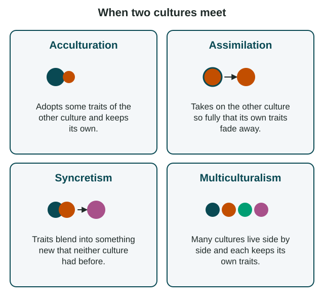

Effects of Diffusion
When diffusion brings cultures together, four results are common.
Part 1 · Hook
Why this matters
Part 2 · Before you start
What this builds on
Part 3 · Prerequisite check
Quick check before you start
1. Cultures meeting in one place mix into a new local form, such as a new language or food. What is this called?
- Creolization
- Ethnocentrism
- Distance decay
- Placemaking
Show the answer
Creolization is the mixing of cultures into a new local form.
- Correct: Creolization:
- Ethnocentrism:
- Distance decay:
- Placemaking:
2. Which religion does AP® Human Geography class as universalizing?
- Christianity
- Hinduism
- Judaism
- Shinto
Show the answer
Christianity, Islam, Buddhism and Sikhism are classed as universalizing; Hinduism and Judaism as ethnic.
- Correct: Christianity:
- Hinduism:
- Judaism:
- Shinto:
Part 4 · See it
See it first

Part 5 · Step by step
How it works, step by step
- Diffusion brings two cultures into contactpeople adopt, keep, lose or blend traits
- A group adopts some new traits and keeps its ownthat is acculturation, as with a newcomer who learns English but keeps her home language
- Over generations, a group's own traits fade awaythat is assimilation, sometimes chosen and sometimes forced, as in Canada's residential schools
- Traits blend into a new form, or groups keep their cultures side by sidethe result is syncretism (the Day of the Dead) or multiculturalism (Toronto)
Part 6 · Key ideas
Key ideas
- Acculturation: a group adopts some traits of another culture and keeps its own.
- Assimilation: a group takes on another culture so fully that its own traits fade away. It can be chosen, or forced by policy.
- Syncretism: traits from two cultures blend into a new form, such as the Day of the Dead in Mexico or Santería in Cuba.
- Multiculturalism: many cultures live side by side in one society and each keeps its own traits, as in Toronto under Canada's 1971 policy.
Part 7 · Misconception
A common mistake
The wrong idea: Acculturation and assimilation mean the same thing.
What actually happens: They differ in what remains. In acculturation the old culture stays beside the new one (a newcomer in Houston who keeps Vietnamese at home). In assimilation it fades away (Norwegian immigrants' great-grandchildren in Minnesota who speak only English).
Part 8 · Check yourself
Check yourself
Exam-style questions. Anything you miss goes into your review queue.
Text
Four cases of cultures meeting
Four cases (LevlPrep, 2026; cases 1 and 2 describe invented people, cases 3 and 4 real places)
Case 1. Mai moved from Viet Nam to Houston, Texas, in 2015. She learned English for her job and cheers for the Houston Texans, but she speaks Vietnamese at home and celebrates Tết, the Lunar New Year.
Case 2. The great-grandchildren of Norwegian immigrants to rural Minnesota speak only English. Apart from one holiday dish, they keep no Norwegian customs and think of themselves simply as Americans.
Case 3. In Mexico, the Day of the Dead blends Indigenous traditions of honoring the dead with the Catholic days of All Saints and All Souls, into a festival with altars, marigolds and sugar skulls.
Case 4. In Toronto, Canada, many groups keep their own languages, festivals and neighborhoods side by side. Canada made multiculturalism an official policy in 1971.
1. Which effect of diffusion does Case 1 show?
- Assimilation
- Syncretism
- Acculturation
- Multiculturalism
Show the answer
Mai adopted some traits of her new home (English, the Texans) while keeping her own (Vietnamese at home, Tết). That is acculturation.
- Assimilation: Assimilation would mean Mai's Vietnamese traits fading away, but she still speaks Vietnamese and celebrates Tết.
- Syncretism: Mai keeps both cultures side by side; nothing in the case blends them into a new form.
- Correct: Acculturation: Right: Mai adopted some traits of her new home (English, the Texans) while keeping her own (Vietnamese at home, Tết). That is acculturation.
- Multiculturalism: Multiculturalism describes a society of many groups. Case 1 is about one person adopting some new traits and keeping her own.
2. Which effect of diffusion does Case 2 show?
- Assimilation
- Acculturation
- Syncretism
- Multiculturalism
Show the answer
by the fourth generation the family's Norwegian language and customs have faded, and they identify simply as Americans. That is assimilation.
- Correct: Assimilation: Right: by the fourth generation the family's Norwegian language and customs have faded, and they identify simply as Americans. That is assimilation.
- Acculturation: Acculturation keeps the old culture alongside the new one. Here the Norwegian traits have nearly vanished.
- Syncretism: Nothing has blended into a new form; one culture replaced the other.
- Multiculturalism: The family no longer keeps its own culture beside others, so this is not multiculturalism.
3. Which effect of diffusion does Case 3 show?
- Assimilation
- Acculturation
- Multiculturalism
- Syncretism
Show the answer
Indigenous and Catholic traditions blended into a new festival that neither had before. Blending into something new is syncretism.
- Assimilation: Indigenous traditions did not fade away; they are central to the festival.
- Acculturation: Acculturation keeps two cultures separate in one person or group. Here the traditions merged into one new form.
- Multiculturalism: Multiculturalism keeps cultures side by side and separate; here they blended.
- Correct: Syncretism: Right: Indigenous and Catholic traditions blended into a new festival that neither had before. Blending into something new is syncretism.
4. Which statement best compares Case 3 and Case 4?
- Both cases show cultures blending into one new form
- Case 3 blends cultures; Case 4 keeps them apart
- Both cases show one culture replacing another
- Case 3 keeps cultures apart; Case 4 blends them
Show the answer
syncretism (Case 3) merges traits into something new, whereas multiculturalism (Case 4) keeps each group's traits distinct.
- Both cases show cultures blending into one new form: Case 4 describes groups keeping their own traits side by side, not blending.
- Correct: Case 3 blends cultures; Case 4 keeps them apart: Right: syncretism (Case 3) merges traits into something new, whereas multiculturalism (Case 4) keeps each group's traits distinct.
- Both cases show one culture replacing another: Neither case shows replacement; that would be assimilation, as in Case 2.
- Case 3 keeps cultures apart; Case 4 blends them: This reverses the two cases.
5. Which statement correctly compares acculturation and assimilation?
- Both mean blending two cultures into a new form
- Acculturation is forced; assimilation is a free choice
- Assimilation keeps the old culture; acculturation drops it
- Acculturation keeps old traits; assimilation loses them
Show the answer
in acculturation a group adopts some new traits but keeps its own. In assimilation it takes on the new culture so fully that its own traits fade away.
- Both mean blending two cultures into a new form: That is syncretism. Acculturation and assimilation are about adopting another culture's traits.
- Acculturation is forced; assimilation is a free choice: Either one can be chosen or pressed on people. The difference is how much of the old culture remains.
- Assimilation keeps the old culture; acculturation drops it: This reverses the two terms.
- Correct: Acculturation keeps old traits; assimilation loses them: Right: in acculturation a group adopts some new traits but keeps its own. In assimilation it takes on the new culture so fully that its own traits fade away.
6. A city is described as a "salad bowl": each group keeps its own flavor, yet all share one bowl. Which effect of diffusion does the image describe?
- Assimilation
- Multiculturalism
- Syncretism
- Ethnocentrism
Show the answer
in a salad, each piece keeps its own taste and shape, as groups keep their own traits while living together.
- Assimilation: Assimilation is closer to a "melting pot," where traits melt into one culture.
- Correct: Multiculturalism: Right: in a salad, each piece keeps its own taste and shape, as groups keep their own traits while living together.
- Syncretism: Syncretism blends traits into a new form; a salad keeps them separate.
- Ethnocentrism: Ethnocentrism is judging others by your own culture, not living side by side.
Part 9 · Summary
Summary
Part 10 · Up next
What comes next
Part 11 · Connections